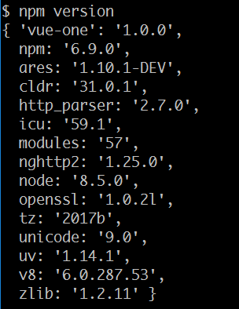
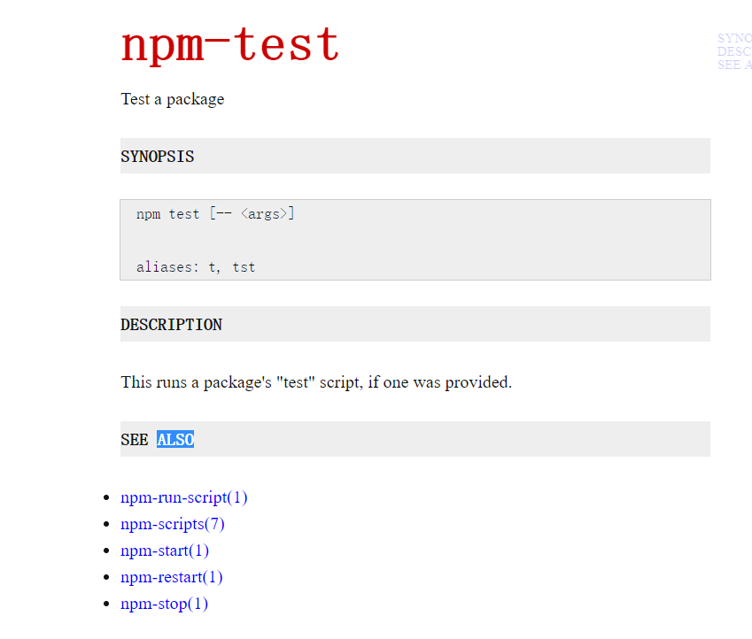
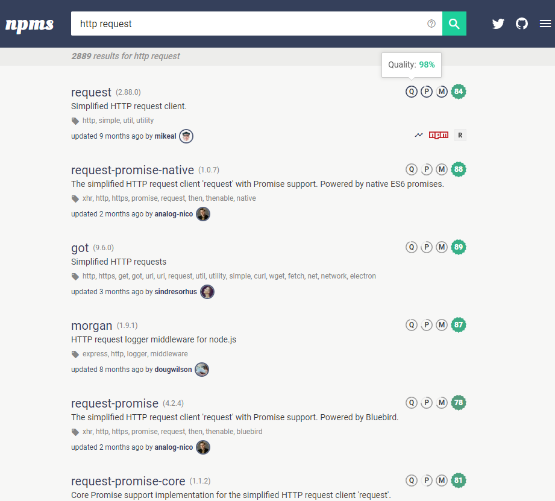
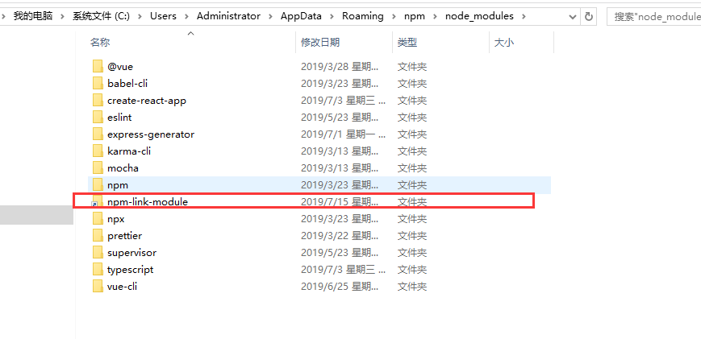
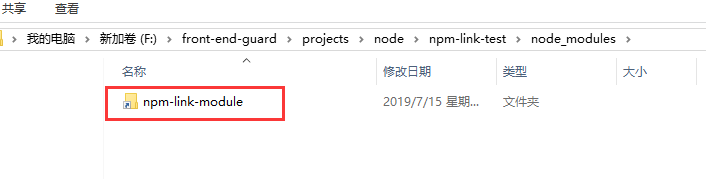
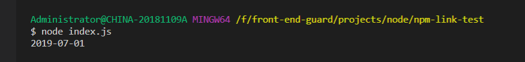
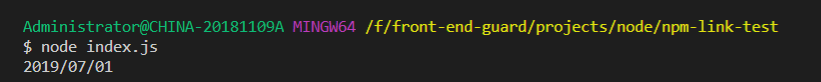

nodejs进阶教程，小白绕道！！！
前提：请确保安装了node.js
npm install是最常见的npm cli命令，但是它还有更多能力！接下来你会了解npm是如何在应用的整个生命周期帮助你的-从创建一个项目到开发和部署整个生命周期
在开始之前，我们先来看看一些查看正在运行的npm版本的命令
获取当前npm cli正在使用的版本，你可以执行命令 npm version，这条命令除了返回版本外，还可以返回很多信息-当前包的版本，你正在使用的node.js的版本，openSSL或者V8的版本，以我本地安装的node为例，结果如下：

和大多数的命令行工具一样，npm也有一个内置的帮助函数, 可以获取命令的描述和提要，比入我们想看看npm test命令是做什么的，执行 npm help test

npm init创建新项目使用 npm init命令可以帮助你交互式地创建 package.json文件，会弹出项目名称和描述的问题，有一个快速的解决方法 npm init--yes(或者简写 npm init-y),那么就不会弹出任何问题了，仅仅是使用默认配置创建一个 package.json， 使用下面的命令，你可以配置这些默认配置
npm config set init.author.name YOUR_NAMEnpm config set init.author.email YOUE_EMAIL查找正确的npm包相当具有挑战性-有成千上万的包可供选择，因此选择正确的npm 包很令人苦恼了，然而，我们可以选择一个模块帮助我们发送HTTP请求 有一个网站可以帮助我们简单地完成这个任务，它就是npms.io，它会展示包的质量，受欢迎度，和维护性，这些是通过一个模块是否更新了依赖，是否有提示配置，是否做了测试覆盖，最近有没有提交记录来综合计算得出的

一旦我们找到了我们的模块（在我们的例子中是一个request模块），我们应该看一下文档，查看issues,以便更好地了解我们即将引入到应用中的包，不要忘记你使用的npm包越多，你的项目的风险就越高
如果你想在cli中打开这个模块的首页,执行
npm home request
打开模块的issues
npm bugs request
或者你只是想查看模块的git仓库，执行下面的命令
npm repo request
npm采用semver进行控制
所谓SEMVER，指的是语义化版本，其规则概述如下： 版本格式：主版本号.次版本号.修订号，版本号递增规则如下：
- 主版本号：新的架构调整，不兼容老版本
- 次版本号：新增功能，兼容老版本
- 修订号：修复bug，兼容老版本。
一旦你决定将第三方包引入你的项目，你必须安装和保存它，最常见的命令是 npm install some-package,如果你想自动将包信息添加进 package.json文件，你需要执行 npm install some-package--save
npm默认会带着'^’这个前缀保存你的包,具体的安装规则如下：
^version
兼容某个版本版本号中最左边的非0数字的右侧可以任意如果缺少某个版本号，则这个版本号的位置可以任意如：^1.1.2 ，表示>=1.1.2<2.0.0，可以是1.1.2，1.1.3，.....，1.1.n，1.2.n，.....，1.n.n如：^0.2.3 ，表示>=0.2.3 <0.3.0，可以是0.2.3，0.2.4，.....，0.2.n如：^0.0，表示 >=0.0.0 <0.1.0，可以是0.0.0，0.0.1，.....，0.0.n这也意味着当你下次执行 npm install的时候，即使主版本没有更改，次版本或者修订版本发生了改变，你的这个模块会重装，你可以执行下面的命令修改安装包版本规则 npm configsetsave-prefix='~'
这个包前缀的安装规则如下：
~version
大概匹配某个版本如果minor版本号指定了，那么minor版本号不变，而patch版本号任意如果minor和patch版本号未指定，那么minor和patch版本号任意如：~1.1.2，表示>=1.1.2 <1.2.0，可以是1.1.2，1.1.3，.....，1.1.n 如：~1.1，表示>=1.1.0 <1.2.0如：~1，表示>=1.0.0<2.0.0，可以是1.0.0，1.0.1，.....，1.1.n，1.2.n，.....，1.n.n如果你想保存指定的版本号，执行 npm configsetsave-exacttrue
上面已经介绍过了，npm采用语义化的版本号 semver 进行控制，让开发过程中依赖的获取和升级变得非常容易，但不严格的版本号控制，也带来了不确定性
可以用 npm shrinkwrap解决这个问题，这条命令会生成一个npm-shrinkwrap.json，这个文件里面不仅包含了安装在你机器上的指定版本的包，而且还有包的指定版的依赖包，一旦在项目的根目录下有这个文件，你执行 npm install命令会重新生成一个相同的依赖树
npm有一个内置的工具方法命令 npm outdated可以检查过时的包，在你项目下运行`npm outdated'即可，但是手动执行检查更新命令就很烦了，有一个可以自动执行包更新检查的工具Greenkeeper，有兴趣的童鞋可以戳进链接了解。
在本地开发npm包的时候，我们可以使用 npm link命令，将npm模块链接到对应的运行项目中去，方便地对模块进行调试和测试
举个例子来说明是什么意思以及怎么使用吧
我们现在有两个项目，分别是npm-link-module和npm-link-test,其中npm-link-module是我们要开发的npm包，npm-link-test用来测试我们开发的包
在npm-link-module下执行 npm init-y生成一个默认的包配置文件package.json，在目录下新建index.js如下，写个简单的日期转换函数
function formateTime(date) { let year = date.getFullYear(); let month = date.getMonth() + 1; let day = date.getDay(); month = month < 10 ? '0' + month : month; day = day < 10 ? '0' + day : day; return year + '-' + month + '-' + day;}module.exports = formateTime然后执行 npm link, 执行命令后，npm-link-module会根据package.json上的配置，被链接到全局，路径是 {prefix}/lib/node_modules/<package>，这是官方文档上的描述，我们可以使用npm config get prefix命令获取到prefix的值(我使用的是windows，实际被链接到的路径是 {prefix}/node_modules/<package>)  我们可以看到，已经在这个目录下面生成了一个npm-link-module的快捷方式
再进入npm-link-test,执行 npm init-y生成包文件，接着执行 npm link npm-link-module 可以看到在这个项目的node_modules目录下生产了一个npm-link-module的快捷方式  现在npm-link-test这个项目就可以引用这个 npm-link-module这个模块了
我们在npm-link-test的目录下新建index.js文件,内容如下
let formateTime = require('npm-link-module');let date = new Date();console.log(formateTime(date));然后执行node index.js，可以看到命令行已经打印出函数的执行结果了

然后，我们修改下npm-link-module中的index.js文件的日期函数，返回结果就修改成返回斜线格式的日期
return year + '/' + month + '/' + day;再回到npm-link-test目录下执行index.js，可以看到，返回结果已经变成了斜线的日期

看到了吧，所有对npm-link-module的修改会被直接映射到npm-link-test/node_modules/npm-link-module
说明一下，这个nodejs进阶教程计划写10篇左右，现在心中有大致的框架，所以准备边写边梳理，写完会将教程目录列出来
下面是我的个人前端公众号，欢迎大家扫码关注，第一时间获取教程的更新信息